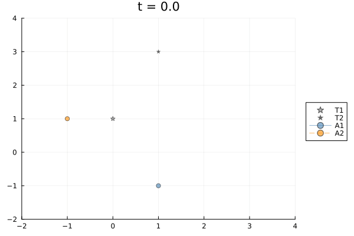

Single‑Integrator Target Tracking (DSL Version)
In this literate notebook we illustrate how the TrackingDSL macro‑based language in CellularSheaves.jl can be used to describe a simple single‑integrator tracking problem. The DSL lets us declare the spaces, dynamics, graph topology, consensus, and tracking edges symbolically; the concrete numeric values are supplied later via a context dictionary. After lowering the program we obtain a time‑expanded EuclideanSheaf; solving for its global sections (via harmonic extension) yields the optimal tracking control trajectory.
Imports
using LinearAlgebra
using Plots
using Graphs
using CellularSheaves
using CellularSheaves.ControlSheaves
using CellularSheaves.ControlSheaves.TrackingDSL # DSL utilities
using CellularSheaves.ControlSheaves.MultiAgentTracking # sheaf builder & solverHelper: smooth reference trajectory
We keep the same sinusoidal reference used previously; it will be turned into a pinned target later.
"""
ref_curve(t; ω = 0.5, amp = 1.0)
Return a 2‑dimensional reference position `p(t)` together with its first
and second derivatives. The trajectory is `p(t) = amp * [sin(ω*t), cos(ω*t)]`.
"""
function ref_curve(t; ω = 1.0, amp = 1.0)
p = amp .* [sin.(ω*t), cos.(ω*t)]
dp = amp*ω .* [cos.(ω*t), -sin.(ω*t)]
ddp = -amp*ω^2 .* [sin.(ω*t), cos.(ω*t)]
return p, dp, ddp
endMain.ref_curve1️⃣ Single‑Integrator Tracking via the DSL
We consider two agents moving in the plane, each with dynamics x_{k+1} = A·x_k + B·u_k. Here A and B are obtained from a zero‑order‑hold (ZOH) discretisation of continuous‑time matrices Ac and Bc with sampling period h. The targets follow the sinusoidal curve defined above.
# -------------------------------------------------------------------
# 1️⃣ Declare the tracking program (symbolic)
# -------------------------------------------------------------------
prog_si = @tracking_problem begin
# Spaces
space(X) = R^2 # state space ℝ²
space(U) = R^2 # control space ℝ²
# Two agents and two targets
agent(a1; dynamics=(A,B), period=h)
agent(a2; dynamics=(A,B), period=h)
target(t1)
target(t2)
# Horizon and discrete time set
horizon(K) # K will be bound in the context
times(Tall = 0:K) # Tall = 0,…,K
# Consensus between the two agents at every timestep
consensus(c1; agents=(a1,a2), maps=(pi_x,pi_x), at=Tall)
# Each agent tracks its own target at every step
track(tr1; agent=a1, target=t1, maps=(pi_x,pi_x), at=Tall)
track(tr2; agent=a2, target=t2, maps=(pi_x,pi_x), at=Tall)
endCellularSheaves.ControlSheaves.TrackingDSL.TrackingDSLTerm.TrackingProgram(CellularSheaves.ControlSheaves.TrackingDSL.TrackingDSLTerm.TrackingStmt[CellularSheaves.ControlSheaves.TrackingDSL.TrackingDSLTerm.SpaceDecl(:X, 2), CellularSheaves.ControlSheaves.TrackingDSL.TrackingDSLTerm.SpaceDecl(:U, 2), CellularSheaves.ControlSheaves.TrackingDSL.TrackingDSLTerm.AgentDecl(:a1, :A, :B, :h), CellularSheaves.ControlSheaves.TrackingDSL.TrackingDSLTerm.AgentDecl(:a2, :A, :B, :h), CellularSheaves.ControlSheaves.TrackingDSL.TrackingDSLTerm.TargetDecl(:t1), CellularSheaves.ControlSheaves.TrackingDSL.TrackingDSLTerm.TargetDecl(:t2), CellularSheaves.ControlSheaves.TrackingDSL.TrackingDSLTerm.HorizonDecl(:K), CellularSheaves.ControlSheaves.TrackingDSL.TrackingDSLTerm.TimeSetDecl(:Tall, CellularSheaves.ControlSheaves.TrackingDSL.TrackingDSLTerm.TimeRange(CellularSheaves.ControlSheaves.TrackingDSL.TrackingDSLTerm.LiteralTime(0), CellularSheaves.ControlSheaves.TrackingDSL.TrackingDSLTerm.NamedTime(:K))), CellularSheaves.ControlSheaves.TrackingDSL.TrackingDSLTerm.ConsensusConstraint(:c1, (:a1, :a2), (:pi_x, :pi_x), CellularSheaves.ControlSheaves.TrackingDSL.TrackingDSLTerm.NamedTimeSet(:Tall)), CellularSheaves.ControlSheaves.TrackingDSL.TrackingDSLTerm.TrackConstraint(:tr1, :a1, :t1, (:pi_x, :pi_x), CellularSheaves.ControlSheaves.TrackingDSL.TrackingDSLTerm.NamedTimeSet(:Tall)), CellularSheaves.ControlSheaves.TrackingDSL.TrackingDSLTerm.TrackConstraint(:tr2, :a2, :t2, (:pi_x, :pi_x), CellularSheaves.ControlSheaves.TrackingDSL.TrackingDSLTerm.NamedTimeSet(:Tall))])Context with concrete matrices and parameters (ZOH discretisation)
nx = 2
nu = 2
h = 0.5 # sampling period
K = 100 # horizon length (101 timesteps)
times = 0:h:K*h
Ac = [0 1.0/20; 0.0 0] # simple spring‑like dynamics in the first state
Bc = Matrix{Float64}(I(2)) # full actuation (identity)
Ad, Bd = continuous_to_discrete_zoh(Ac, Bc, h)
x0_a1 = [1.0, -1.0] # agent start
x0_a2 = [-1.0, 1.0] # agent start
p0, _, _ = ref_curve(0.0) # target start (reference at t=0)
circle, _, _ = ref_curve(times) # target (reference over whole domain
circle = hcat(circle...)
circle = hcat(circle, zeros(size(circle)))
ctx = Dict{Symbol,Any}(
:h => h,
:K => K,
:A => Ad,
:B => Bd,
:x0_a1 => x0_a1,
:x0_a2 => x0_a2,
:p0 => p0,
:pi_x => state_projection_matrix([1,2], nx, nu)
)Dict{Symbol, Any} with 8 entries:
:A => [1.0 0.025; 0.0 1.0]
:K => 100
:B => [0.5 0.00625; 0.0 0.5]
:h => 0.5
:p0 => [0.0, 1.0]
:x0_a1 => [1.0, -1.0]
:x0_a2 => [-1.0, 1.0]
:pi_x => [1.0 0.0 0.0 0.0; 0.0 1.0 0.0 0.0]Lower, build the sheaf and solve
# Resolve symbolic names, validate, and lower to a concrete problem
lowered_si = lower_tracking_program(prog_si, ctx)
prob_si = lowered_si.problem # a `TrackingProblem`
# Build the time‑expanded sheaf and run the harmonic‑extension solver
# Boundary dictionary expects vertex → stalk vector. The helper
# `agent_vertex`/`target_vertex` translate (agent, time) into an integer.
boundary_si = Dict(
agent_vertex(prob_si, 1, 0) => vcat(x0_a1, zeros(2)), # state+control
agent_vertex(prob_si, 2, 0) => vcat(x0_a2, zeros(2)), # state+control
target_vertex(prob_si, 1, 0) => vcat(p0, zeros(2)),
target_vertex(prob_si, 2, 0) => 2 .* vcat(p0, zeros(2)),
)
for t in 1:size(circle, 1)
boundary_si[target_vertex(prob_si, 1, t-1)] = circle[t, :]
boundary_si[target_vertex(prob_si, 2, t-1)] = 2 .* circle[t, :] + [1.0, 1.0, 0, 0]
end
shf = build_time_expanded_tracking_sheaf(prob_si)
result_si = run_scenario("single‑integrator", prob_si, boundary_si, times;
y_col=1, z_col=2)ScenarioResult:
label : single‑integrator
null dim : 4
||dz|| : 11.33
agents : 2
targets : 2Plotting the agents and reference
animate_tracking_xy(result_si; filename="scenario_1.gif")Plots.Animation("/tmp/jl_OF6qwQ", ["000001.png", "000002.png", "000003.png", "000004.png", "000005.png", "000006.png", "000007.png", "000008.png", "000009.png", "000010.png" … "000092.png", "000093.png", "000094.png", "000095.png", "000096.png", "000097.png", "000098.png", "000099.png", "000100.png", "000101.png"])Consensus only in a projection
prog = @tracking_problem begin
# Spaces
space(X) = R^2 # state space ℝ²
space(U) = R^2 # control space ℝ²
# Two agents and two targets
agent(a1; dynamics=(A,B), period=h)
agent(a2; dynamics=(A,B), period=h)
target(t1)
target(t2)
# Horizon and discrete time set
horizon(K) # K will be bound in the context
times(Tall = 0:K) # Tall = 0,…,K
# Consensus between the two agents at final timestep
consensus(c1; agents=(a1,a2), maps=(pi_x1,pi_x1), at=Tall[end])
# Each agent tracks its own target at every timestep
track(tr1; agent=a1, target=t1, maps=(pi_x2,pi_x2), at=Tall)
track(tr2; agent=a2, target=t2, maps=(pi_x2,pi_x2), at=Tall)
end
ctx[:pi_x1] = state_projection_matrix([1], nx, nu)
ctx[:pi_x2] = state_projection_matrix([2], nx, nu)
lowered = lower_tracking_program(prog, ctx, consensus_weight=1/100)
prob = lowered.problem
result = run_scenario("projected-consensus", prob, boundary_si, times; y_col=1, z_col=2)
@show result.null_dim
animate_tracking_xy(result; filename="scenario2.gif")Plots.Animation("/tmp/jl_P0DHv5", ["000001.png", "000002.png", "000003.png", "000004.png", "000005.png", "000006.png", "000007.png", "000008.png", "000009.png", "000010.png" … "000092.png", "000093.png", "000094.png", "000095.png", "000096.png", "000097.png", "000098.png", "000099.png", "000100.png", "000101.png"])Overconstrained Consensus
The previous example is only supposed to impose the consensus at the last time step, but the agents still go to consensus immediately. I think this is because there is no tension between the consensus requirement and the tracking requirement. Let's add full rank tracking restriction maps to make tracking harder.
prog = @tracking_problem begin
# Spaces
space(X) = R^2 # state space ℝ²
space(U) = R^2 # control space ℝ²
# Two agents and two targets
agent(a1; dynamics=(A,B), period=h)
agent(a2; dynamics=(A,B), period=h)
target(t1)
target(t2)
# Horizon and discrete time set
horizon(K) # K will be bound in the context
times(Tall = 0:K) # Tall = 0,…,K
# Consensus between the two agents at a subset of timesteps
consensus(c1; agents=(a1,a2), maps=(pi_x2,pi_x2), at=25) # alignment in x2
consensus(c2; agents=(a1,a2), maps=(pi_x1,pi_x1), at=26) # alignment in x1
consensus(c3; agents=(a1,a2), maps=(pi_x1,pi_x1), at=90) # alignment in x1
consensus(c4; agents=(a1,a2), maps=(pi_x1,pi_x1), at=92) # alignment in x1
# Each agent tracks its own target at every timestep
track(tr1; agent=a1, target=t1, maps=(pi_x1,pi_x1), at=Tall)
track(tr2; agent=a2, target=t2, maps=(pi_x2,pi_x2), at=Tall)
end
ctx[:pi_x1] = state_projection_matrix([1], nx, nu)
ctx[:pi_x2] = state_projection_matrix([2], nx, nu)
ctx[:negpi_x1] = -state_projection_matrix([1], nx, nu)
lowered = lower_tracking_program(prog, ctx, consensus_weight=1/100)
prob = lowered.problem
result = run_scenario("projected-consensus", prob, boundary_si, times; y_col=1, z_col=2)
@show result.null_dim
animate_tracking_xy(result; filename="scenario3.gif")Plots.Animation("/tmp/jl_fiWCJh", ["000001.png", "000002.png", "000003.png", "000004.png", "000005.png", "000006.png", "000007.png", "000008.png", "000009.png", "000010.png" … "000092.png", "000093.png", "000094.png", "000095.png", "000096.png", "000097.png", "000098.png", "000099.png", "000100.png", "000101.png"])Transitive tracking
This example shows transitive tracking via consensus: agent a1 tracks target t1 in the x1 coordinate, while agent a2 tracks target t2 in the x2 coordinate. Then a1 and a2 enforce consensus in x2, so a1 indirectly tracks t2’s x2 coordinate through its agreement with a2.
prog = @tracking_problem begin
# Spaces
space(X) = R^2 # state space ℝ²
space(U) = R^2 # control space ℝ²
# Two agents and two targets
agent(a1; dynamics=(A,B), period=h)
agent(a2; dynamics=(A,B), period=h)
target(t1)
target(t2)
# Horizon and discrete time set
horizon(K) # K will be bound in the context
times(Tall = 10:K) # Tall = 10,…,K
# Consensus between the two agents at a subset of timesteps
consensus(c1; agents=(a1,a2), maps=(pi_x2,pi_x2), at=Tall) # alignment in x2
# Each agent tracks its own target at every timestep
track(tr1; agent=a1, target=t1, maps=(pi_x1,pi_x1), at=Tall)
track(tr2; agent=a2, target=t2, maps=(pi_x2,pi_x2), at=Tall)
end
ctx[:pi_x1] = state_projection_matrix([1], nx, nu)
ctx[:pi_x2] = state_projection_matrix([2], nx, nu)
lowered = lower_tracking_program(prog, ctx, consensus_weight=1/100)
prob = lowered.problem
result = run_scenario("projected-consensus", prob, boundary_si, times; y_col=1, z_col=2)
@show result.null_dim
animate_tracking_xy(result; filename="scenario4.gif")Plots.Animation("/tmp/jl_DWDNsh", ["000001.png", "000002.png", "000003.png", "000004.png", "000005.png", "000006.png", "000007.png", "000008.png", "000009.png", "000010.png" … "000092.png", "000093.png", "000094.png", "000095.png", "000096.png", "000097.png", "000098.png", "000099.png", "000100.png", "000101.png"])